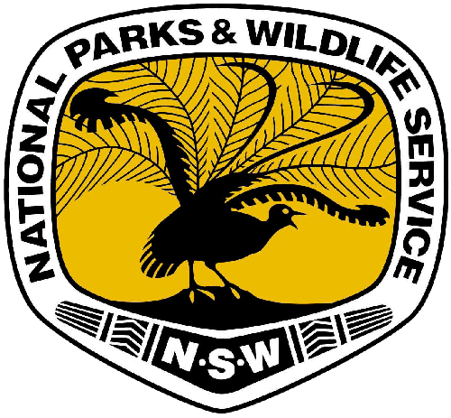

Clients


AES conducts fauna surveys conforming to government authority requirements and using up-to-date methods and technology. We have a range of traps, infra-red cameras and recording devices suitable for catching, sampling hair, taking images or recording the calls of various terrestrial, vertebrate fauna species.
AES can undertake flora surveys small to large scales with methods appropriate to the size and scale of the project. As well as targeted searches for rare and threatened flora species, we can assay vegetation communities using quadrat sampling, random menader, linear transects and other methods. We also provide vegetation mapping, using a combination of on-ground sampling and remote sensing methods.
AES prepares assessment reports that comply with the relevant legislation and planning documents, such as the Commonwealth Environment Protection and Biodiversity Conservation Act, the NSW Environmental Planning and Assessment Act, the NSW Threatened Species Conservation Act, various state environmental planning policies and Regional Environmental Plans and local environmental plans.
Vegetation management plans and habitat management plans are increasingly required to accompany development applications to local government authorities. We can prepare documentation that satisfies such needs while ensuring a manageable outcome for your bushland.
Artificial nest boxes were set in 11 bushland reserves under the care and control of Hornsby Shire Council. Populations of Eastern Pygmy-possums were found in six of the reserves, the results aiding in the management of the reserves and this vulnerable species.
Due to the presence of a large population of the threatened plant, Tetratheca glaundulosa and a range of other listed species, a species impact statement was prepared for PF Formation's proposal to expand sand extraction activities at Maroota.
On behalf of Lesryk and IBM, AES undertook flora surveys and assessments of seven cabling routes near the Peninsula Developmental Road between Laura and Bamaga in far north Queensland.
On behalf of the NSW National Parks and Wildlife Service, AES set up monitoring for African Love Grass, Lantana and African Olive in Cattai & Scheyville National Parks and land at Edmondson Park as part of OEH's adaptive management of these weeds.
AES has undertaken numerous surveys and assessments of land use application sites in the Blue Mountains including this one in dense forested bushland.
On behalf of Lesryk, AES undertook a flora survey and assessment of NSW Public Works' proposal to upgrade the flood levee that protects this Murrumbidgee River town.
Lesryk Environmental Consultants
Footprint Green Consultants
Alison Hunt & Associates Environmental Consultants